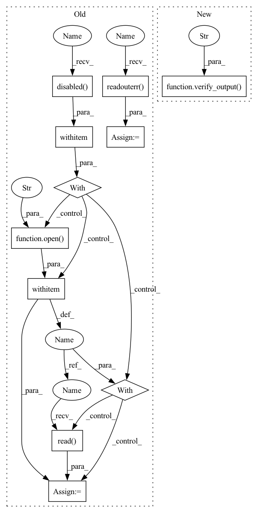

Pattern ID :32254

Before Change
summary(model, input_shape, max_depth=1)
captured = capsys.readouterr().out
with capsys.disabled():
with open("unit_test/test_output/single_input.out") as output_file:
expected = output_file.read()
assert captured == expected
@staticmethod
def test_resnet_out(capsys):
After Change
summary(model, input_shape, max_depth=1)
verify_output(capsys, "unit_test/test_output/single_input.out")
@staticmethod
def test_single_input_with_kernel_macs(capsys):
model = SingleInputNet()
In pattern: SUPERPATTERN
Frequency: 3
Non-data size: 11
Instances
Fragment ID: 94357193
Project Name: tyleryep/torchinfo
Commit Name: 06bbb08ea465ccca0f2ead7f85b650794eaec878
Time: 2020-03-20
Author: tyep@stanford.edu
File Name: unit_test/torchsummary_test.py
M Class Name: TestOutputString
N Class Name: TestOutputString
M Method Name: test_single_input(1)
N Method Name: test_single_input(1)
M Parent Class:
N Parent Class:
M File Name: unit_test/torchsummary_test.py
N File Name: unit_test/torchsummary_test.py
M Start Line: 116
M End Line: 120
N Start Line: 117
N End Line: 117
'>
Before Change
use_branching=False,
verbose=True)
captured = capsys.readouterr().out
with capsys.disabled():
with open("unit_test/test_output/lstm.out") as output_file:
expected = output_file.read()
assert captured == expected
After Change
use_branching=False,
verbose=True)
verify_output(capsys, "unit_test/test_output/lstm.out")
def verify_output(capsys, filename):
captured = capsys.readouterr().out
'>
Fragment ID: 94357192
Project Name: tyleryep/torchinfo
Commit Name: 06bbb08ea465ccca0f2ead7f85b650794eaec878
Time: 2020-03-20
Author: tyep@stanford.edu
File Name: unit_test/torchsummary_test.py
M Class Name: TestOutputString
N Class Name: TestOutputString
M Method Name: test_lstm_out(1)
N Method Name: test_lstm_out(1)
M Parent Class:
N Parent Class:
M File Name: unit_test/torchsummary_test.py
N File Name: unit_test/torchsummary_test.py
M Start Line: 140
M End Line: 144
N Start Line: 147
N End Line: 147
'>
Before Change
model = torchvision.models.resnet152()
summary(model, (3, 224, 224), max_depth=3)
captured = capsys.readouterr().out
with capsys.disabled():
with open("unit_test/test_output/resnet152.out") as output_file:
expected = output_file.read()
assert captured == expected
@staticmethod
def test_lstm_out(capsys):
After Change
summary(model, (3, 224, 224), max_depth=3)
verify_output(capsys, "unit_test/test_output/resnet152.out")
@staticmethod
def test_lstm_out(capsys):
summary(LSTMNet(), (100,),
'>
Fragment ID: 94357191
Project Name: tyleryep/torchinfo
Commit Name: 06bbb08ea465ccca0f2ead7f85b650794eaec878
Time: 2020-03-20
Author: tyep@stanford.edu
File Name: unit_test/torchsummary_test.py
M Class Name: TestOutputString
N Class Name: TestOutputString
M Method Name: test_resnet_out(1)
N Method Name: test_resnet_out(1)
M Parent Class:
N Parent Class:
M File Name: unit_test/torchsummary_test.py
N File Name: unit_test/torchsummary_test.py
M Start Line: 127
M End Line: 131
N Start Line: 138
N End Line: 138